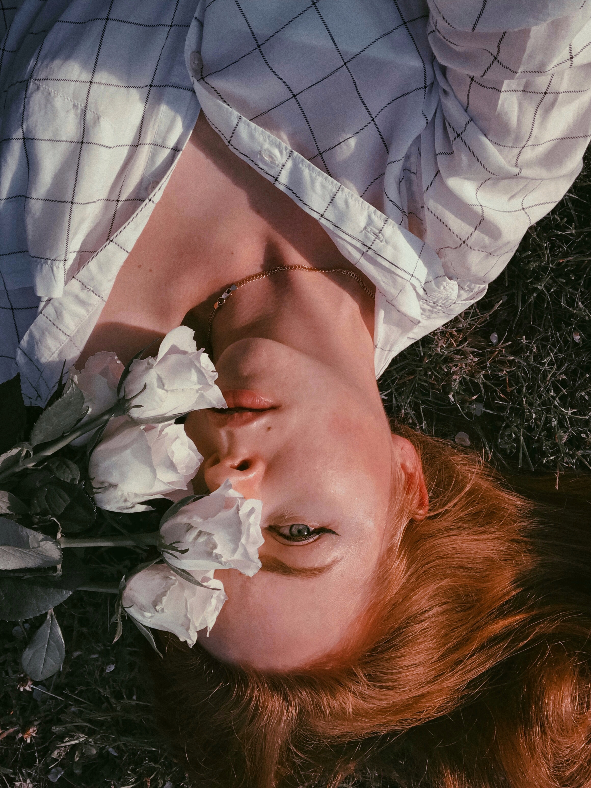

Тут мала б бути фотографія з мамою. Але, зважаючи на те, що їй не
подобається процес зйомки і фото, залишу тут просто фото з її квітами.
▪️ Цей пост для мене особливий, бо пишу про найдорожчу мені людину.
Так дивно, проте таких людей ми рідко публікуємо в сторіс чи стрічці,
рідко насолоджуємось разом ароматним чаєм в кав’ярні, хоча вони так
багато для нас означають.
▫️ Мама. Так часто це перше наше слово, перший досвід любові. Крізь
призму її реальності формується наш світ з перших днів.
▪️ Вона - та, хто вставатиме о 3 ночі і сидітиме біля ліжка, коли тобі
погано, та, до кого ти побіжиш поплакати, коли сил просто немає. Вона
та, хто порадить тобі найкращу блузку під улюблену спідницю; та, що
навчатиме й стане берегинею, твоїм ангелом-охоронцем.
▫️ Вона готуватиме для тебе сніданок, прасуватиме твій одяг. І все це
буде не таким, як ти можеш зробити власноруч. Бо ці дрібні вчинки
наповнені великою любов‘ю.
▪️ Найгірше - усвідомлення того, що це не назавжди. Час летить,
мчиться, і ось ти більше не п’ятирічна дівчинка. Цінуйте дрібниці,
проводьте час разом якісно. Багато говоріть, посміхайтеся і пийте
разом чай.
▫️ Бо мама вас дуже любить💜 Обійміть її поки вам таланить бути
поруч☺️

{kind=link}
{kind=link}